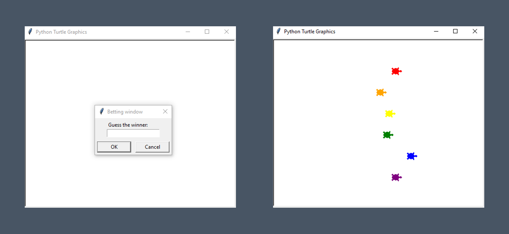

Turtle Race

This Python script simulates a turtle race using the Turtle module. It begins by importing necessary modules: Turtle for graphics and random for generating random distances. Then, it initializes variables such as is_race_on to control the race, screen to hold the Turtle screen, colors for turtle colors, and user_bet to store user input for betting on a turtle. It sets up the screen with dimensions and obtains user input for betting.
Next, it creates turtles based on the colors list, positions them, and stores them in a list called turtles. If the user has placed a bet, the is_race_on flag is set to True, starting the race loop.
Within the race loop, each turtle moves forward a random distance. If a turtle crosses a certain threshold (xcor() > 230), the race ends. The winning turtle's color is determined, and if the user bet matches the winning color, a victory message is printed; otherwise, a loss message is printed.
After the race, the screen waits for a click before closing. This script effectively simulates a turtle race, offering users the chance to place bets on the outcome.